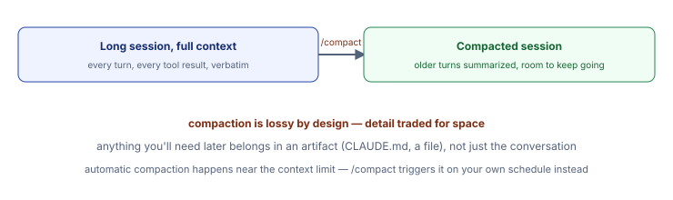

Concept
The context window is a real, finite budget: your system prompt, CLAUDE.md, every message, every tool call and result. As a session runs long, Claude Code automatically summarizes older turns to keep going — that's compaction, and it's lossy by design. /compact lets you trigger it on your own schedule instead of waiting for the automatic threshold.
- Why trigger it manually. Compacting right after finishing a noisy sub-task (e.g. a long debugging session) clears the noise while it's still fresh, rather than losing detail unpredictably later mid-task.
- What survives compaction and what doesn't. Artifacts —
CLAUDE.md, files written to disk — survive because they're re-read fresh, not carried in conversational memory. Anything that only exists as "something we discussed 40 turns ago" is exactly what compaction risks losing.

Hands-on
1Check your current context usage
Claude Code chat panel
/context(If your build doesn't expose this directly, ask: "roughly how full is your current context window?")
2Deliberately generate some noise, then compact
Prompt
Read every .html file in W2D0/ one at a time and give me a one-sentence
summary of each (this is just to fill context — don't overthink it).Then:
/compact
Checkpoint
Ask immediately afterward: "summarize what we just did in the last few turns" — it should still know the gist, but likely not word-for-word detail. That gap is compaction, made visible.
3Prove the artifact-survives-compaction claim
Prompt
Append one line to CLAUDE.md noting that we tested /compact in W2D0 Topic
07. Then run /compact again immediately. Now tell me: is that line still on
disk, and would a BRAND NEW session (not just a compacted one) still see
it?